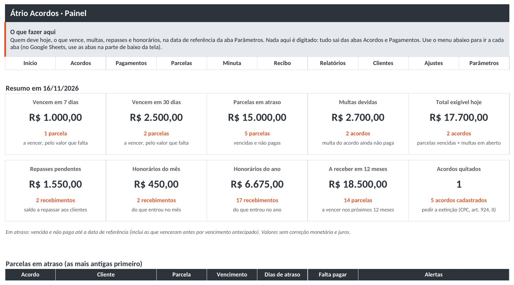
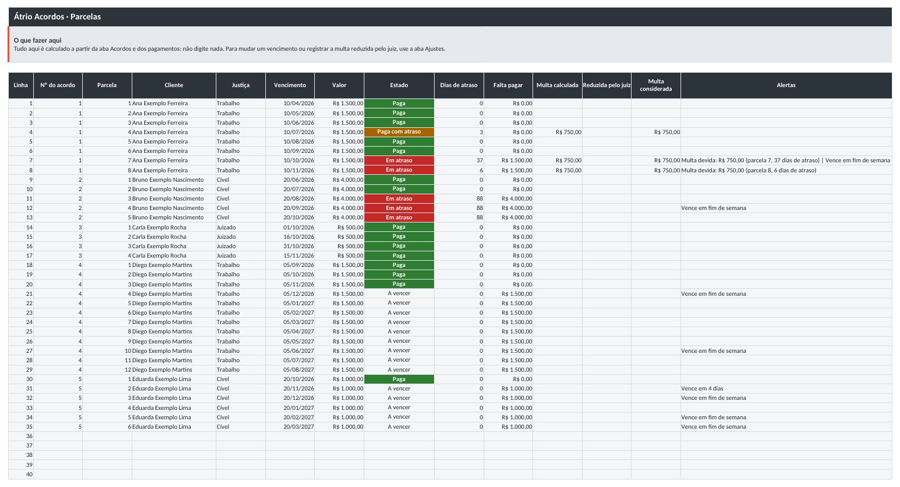
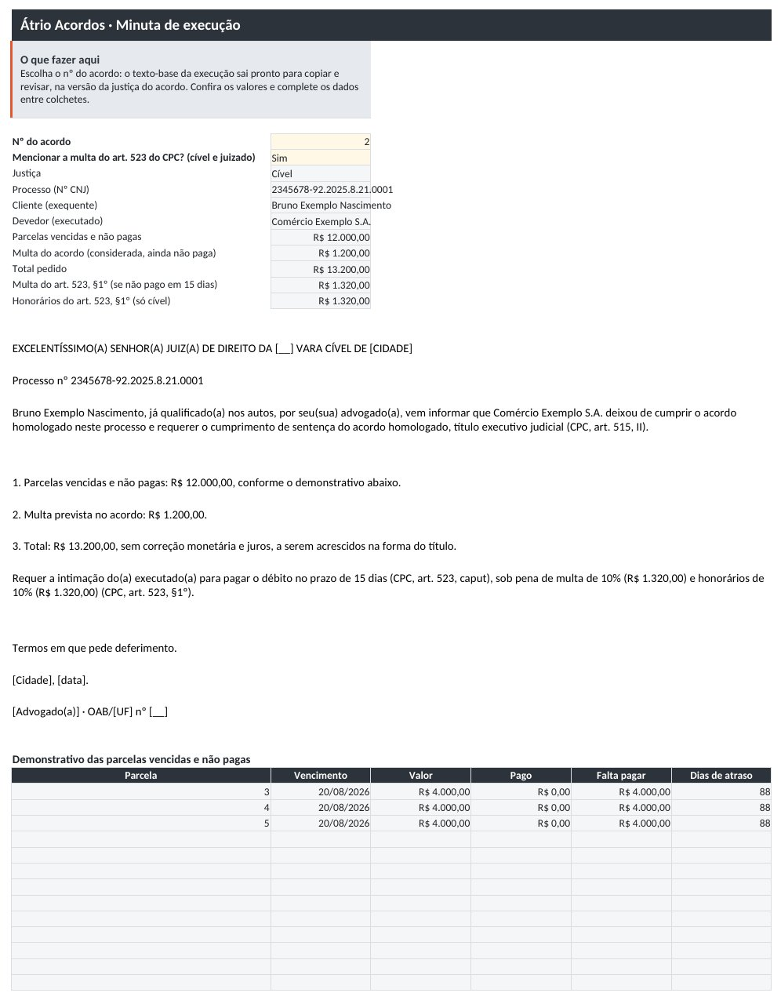
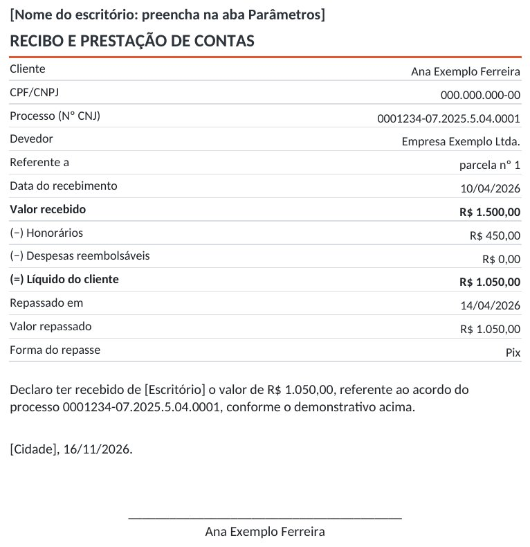

"Quem está atrasado?"
Cada parcela aparece como a vencer, paga, paga com atraso ou em atraso, com os dias de atraso.
Novo · à venda
Controle de acordos judiciais parcelados numa planilha: quem pagou, quem atrasou, quanto de multa e quanto repassar ao cliente. Para a Justiça do Trabalho, a Justiça comum e o juizado especial.
R$ 37
pagamento único, sem mensalidade.
Pagamento e entrega pela Kiwify. 7 dias para desistir, com reembolso pela plataforma.
Kit Recebíveis: esta planilha e a Átrio Recebíveis (RPV, precatório e alvará) por R$ 67. Na tela de pagamento, marque a outra planilha.

O acordo foi homologado em 10 parcelas. Na terceira, o devedor paga dois dias depois; na quinta, paga metade. A ata prevê multa de 50% sobre a parcela em atraso, sem tolerância. Quanto é a multa? O cliente já recebeu a parte dele? E, se o acordo for descumprido, quanto se executa?
Cada parcela aparece como a vencer, paga, paga com atraso ou em atraso, com os dias de atraso.
Como está na ata: sobre a parcela ou sobre o saldo, com tolerância e vencimento antecipado.
Honorários, despesas e o líquido do cliente em cada recebimento, com o saldo a repassar.
O texto-base da execução sai na versão da justiça do acordo, com o demonstrativo das parcelas.
Imagens reais da planilha, com o arquivo de exemplo (dados fictícios).



Os 20 casos de teste foram escritos antes das fórmulas e estão dentro da planilha, com o resultado esperado; são conferidos a cada versão. Numa simulação com 450 acordos sorteados, 34.734 valores da planilha foram comparados com um cálculo independente, sem nenhuma diferença.
Sim. Você escolhe a justiça em cada acordo. A conta é a mesma; muda o texto-base da execução (CLT, art. 876, no trabalho; CPC, art. 515, II, no cível; Lei 9.099/95, art. 22, §1º, no juizado).
Como estiver na ata: você escolhe em cada acordo. Sobre a parcela, cada parcela em atraso gera a multa sobre o que faltava nela. Sobre o saldo, a multa incide uma vez só, sobre tudo o que faltava pagar no primeiro atraso.
A planilha aplica a cláusula como escrita e mostra os dias de atraso; a tolerância em dias, se a ata tiver, é um campo do acordo. Se o juiz reduzir a multa (CC, art. 413), registre o valor reduzido: ele passa a valer e o calculado continua visível.
Não. A planilha mostra o principal e a multa do acordo. Correção e juros são acrescentados na forma do título.
Dois jeitos: um percentual de cada recebimento (inclusive da multa) ou o escritório recebendo as primeiras parcelas até completar o percentual do acordo. Despesas reembolsáveis saem logo depois dos honorários. O líquido do cliente e o saldo a repassar aparecem em cada recebimento.
A planilha foi feita e testada para o Excel 2016 ou mais novo e para o LibreOffice Calc, que é gratuito. O teste completo no Google Sheets ainda está em andamento; até lá, use o Excel ou o LibreOffice.
Não tem macro e não precisa instalar nada.
500 acordos, 6.000 parcelas no total, 3.000 pagamentos e 300 clientes por arquivo.
Não. A planilha fica no seu computador e não envia nada a ninguém.
Pela área de membros da Kiwify, liberada depois da confirmação do pagamento.
Reembolso em até 7 dias a contar da compra, sem precisar explicar o motivo (Código de Defesa do Consumidor, art. 49).
Átrio Acordos · versão 1.0
Ou as duas planilhas, Acordos e Recebíveis, por R$ 67.